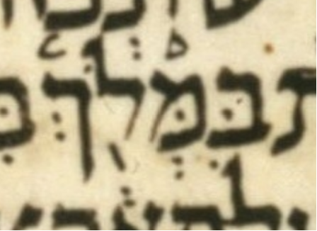

| bcv (tanach.us) | 2k23:33 |
| MPK | בִּמְּלֹ֖ךְ |
| qere | מִמְּלֹ֖ךְ |
| at issue | מ |
| at issue English | removed a dagesh from mem |
| folio col line | 219A 2 12 |
The MPK’s בּ seems to carry a dagesh for the qere’s מ but it is rejected.
See js24:15, which is similar.
Dotan does not note this case, though he does note js24:15.